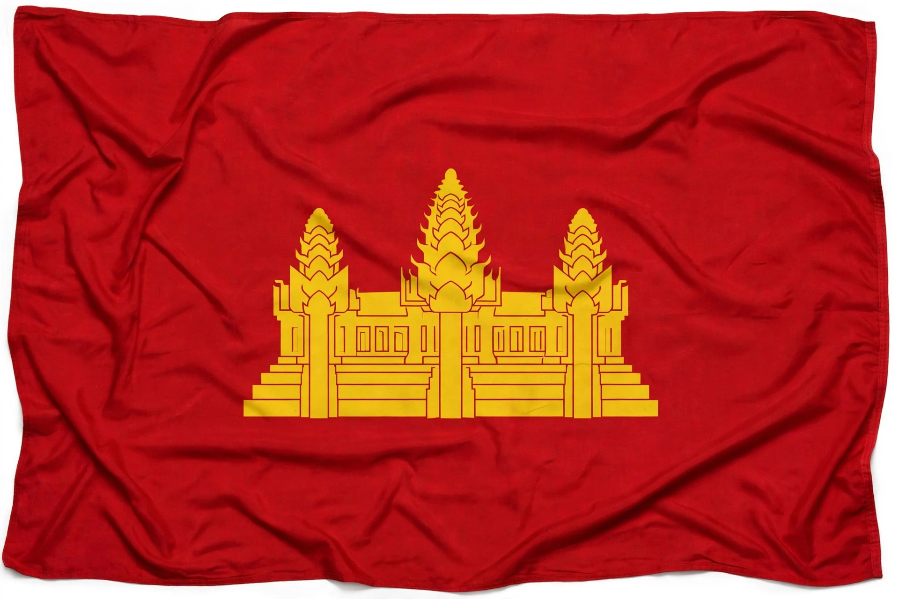

| Democratic Kampuchea | |
|---|---|
| Capital | Phnom Penh |
| Government | Unitary one-party socialist republic |
| Head of state | Khieu Samphan (Chairman of the State Presidium) |
| Prime Minister | Pol Pot |
| Historical era | Cold War |
| Established | 17 April 1975 (fall of Phnom Penh); proclaimed 5 January 1976 |
| Disestablished | 7 January 1979 (capture of Phnom Penh by Vietnamese forces) |
| Preceded by | Khmer Republic |
| Succeeded by | People's Republic of Kampuchea |

Democratic Kampuchea was the official name of Cambodia under the one-party totalitarian government of the Khmer Rouge from 1975 to 1979. After defeating the US-backed Khmer Republic in the Cambodian Civil War, the Khmer Rouge under Pol Pot sought to create an agrarian socialist society founded on ultra-Maoist principles.
Immediately after taking Phnom Penh on 17 April 1975, the regime forcibly evacuated the cities, abolished money, markets, religion, private property and formal education, and drove the population into agricultural collectives. Intellectuals, former officials, ethnic minorities such as the Cham and Vietnamese, and suspected dissenters were persecuted and killed.
Between 1975 and 1979 an estimated 1.5 to 2 million people — roughly a quarter of Cambodia's population — died from execution, starvation, disease and forced labour in what became known as the Cambodian genocide. Sites such as the Tuol Sleng prison (S-21), run by Duch, became symbols of the regime's terror.
Border clashes with Vietnam escalated into the Cambodian–Vietnamese War. Vietnamese forces captured Phnom Penh on 7 January 1979 and installed the People's Republic of Kampuchea. Democratic Kampuchea retained Cambodia's UN seat for years afterwards as part of a coalition government-in-exile, and the Khmer Rouge continued a guerrilla insurgency into the 1990s. Decades later, senior leaders including Nuon Chea were tried by the Extraordinary Chambers in the Courts of Cambodia.